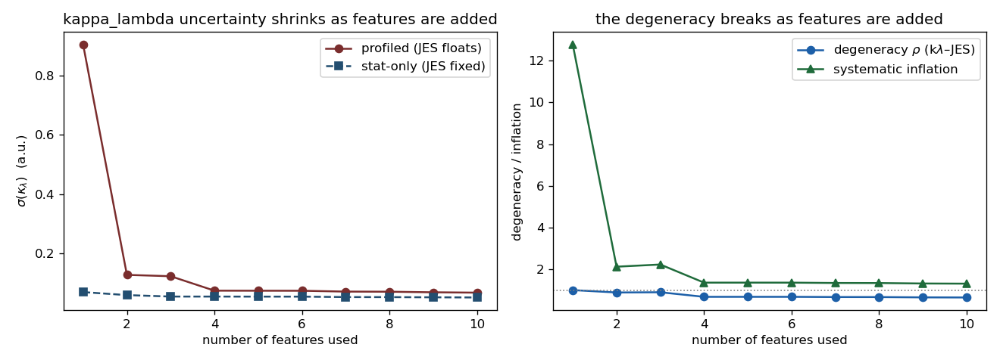

Applies Lessons 1–3 to your actual measurement. The punchline: for κλ in HH→bb̄ττ, the "blind vs aware" choice stops being optional.
κλ sensitivity lives in the mHH shape (triangle–box
interference, strongest in your resolved 250–400 GeV window). So the POI part of your per-event ratio,
R(x|κλ), is an mHH-shape morph. The trouble: the worst
systematics — JES, τES, MET, signal parton shower — deform the same mHH
observable. Signal and systematic live in the same place.
A small Fisher-information toy (teaching/degeneracy_toy.py) turns the claim into a number.
Each parameter imprints a direction in feature space — κλ strong in mHH and the
angular/pTHH variables, JES strong in mHH, mbb and jet-pT —
and we read off the profiled κλ uncertainty and the κλ–JES degeneracy ρ as features are added
(in your 10-feature order):
| features used | degeneracy ρ | σ(κλ) vs all-feature ideal | systematic inflation |
|---|---|---|---|
| mHH only | 1.000 | 17× | 12.8× |
| + cosθ* | 0.885 | 2.4× | 2.1× |
| + mbb (4 features) | 0.677 | 1.4× | 1.4× |
| all 10 features | 0.646 | 1.3× | 1.31× |

Read the extremes: with mHH alone the two are perfectly degenerate (ρ = 1.000) and profiling JES inflates the κλ error ~13× — the measurement is destroyed. With all 10 features the inflation falls to 1.31× — you recover almost the full stat-only sensitivity. The heavy lifting is done by the first distinguishing features: cosθ* (a κλ handle JES barely touches) and mbb (a JES handle κλ barely touches); after those it's diminishing returns. Value comes from features that respond differently to κλ vs the systematic — not from sheer count.
Caveat: this is the Gaussian/Asimov limit with hand-set sensitivities — it shows the mechanism, not your exact numbers. Make it analysis-grade by estimating the two direction vectors from your MC (how much each feature shifts under a κλ variation vs a ±1σ JES variation).
| Systematic | Touches mHH shape? | Treatment | Method |
|---|---|---|---|
| JES, τES, MET, signal shape | yes — carries κλ info | must model & profile (no decorrelation) | R4 morphing + R3 uncertainty |
| ttbar / DY norm, jet→τ fakes, b-tag | mostly no (norm/eff) | model & profile; robustness OK where modelling is shaky (fakes) | R4; decorrelation hedge |
| signal parton shower / hadronization | yes, but hard to knob | robust representation (complement) | R5 RS3L → your FM/Sophon thread |
| κλ theory (scale/PDF) | yes, & depends on κλ | model as non-factorizable with the POI | R4 cross-terms / R3 joint space |
POI × systematic interplay. A rate measurement (FAIR Universe's μ) doesn't have this; κλ does: (i) the HH theory uncertainty (scale/PDF/mtop) itself changes with κλ because κλ changes the interference; (ii) JES's effect on mHH can depend on where in mHH you are — i.e. on κλ. Traditional HistFactory factorizes R(κλ) and S(α) and assumes no interaction — exactly the assumption most likely to break here. This is why R4's cross-terms and R3's GP over the joint (κλ, α) space matter more for κλ.
Honesty matters more because you're signal-starved. HH is tiny → few signal MC events at few simulated (κλ, systematic) points → the mHH-shape morphing is genuinely under-determined. A confidently-wrong interpolation biases κλ. That is precisely the regime where R3's uncertainty-on-the-morphing earns its keep.
JES deforms mHH, which is the same observable that carries the κλ signal. Removing sensitivity to the JES distortion also removes sensitivity to the κλ distortion — you'd erase the signal.
κλ is a shape coupling, so signal-shape and systematic-shape overlap, and there's POI×systematic interplay (the theory uncertainty depends on κλ). FAIR Universe measures a rate, so it lacks this layer.
Signal parton shower / hadronization — it's hard to parameterize as a clean knob, so a robust representation reduces it at the source. (And it's where your foundation-model work connects.)
Series L1 map · L2 jargon · L3 methods · glossary
Ask your teacher. Next could be a hands-on: factor your κλ fit as R(x|κλ)·S(x|α)·g(x) on the FAIR Universe pipeline, or quantify the κλ–JES degeneracy from the picture above with a toy. Say the word.